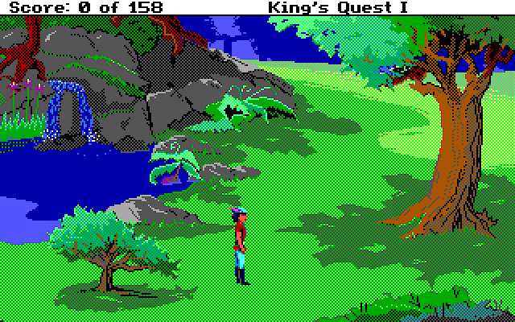
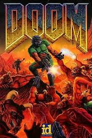
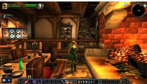

La historia de los videojuegos es fascinante y abarca varias décadas de innovación tecnológica y creatividad. A continuación, se presenta un resumen de los hitos más importantes en el desarrollo de los videojuegos:
1. Los videojuegos comenzaron como experimentos en universidades y laboratorios de investigación. El primer ejemplo es "OXO" (1952), una versión del juego del tres en raya desarrollada por Alexander S. Douglas. Otro pionero fue "Tennis for Two" (1958), creado por William Higinbotham, un simulador de tenis en una pantalla de osciloscopio. En 1962, "Spacewar!" marcó un hito, considerado el primer videojuego jugable en un minicomputador PDP-1.
2. Durante los 70, los videojuegos comenzaron a ganar popularidad con las máquinas recreativas. Atari, fundada por Nolan Bushnell y Ted Dabney, lanzó "Pong" (1972), el primer éxito comercial. La industria comenzó a explotar con juegos icónicos como "Space Invaders" (1978) y "Pac-Man" (1980), convirtiendo las salas de recreativas en epicentros de entretenimiento.
3. Con el auge de las computadoras personales, como la Apple II y el Commodore 64, los videojuegos comenzaron a adaptarse para estos dispositivos, permitiendo que los usuarios jugaran en casa. Los géneros se diversificaron: se popularizaron los juegos de aventuras con títulos como "Zork" y "King's Quest", y los primeros RPG como "Ultima" y "Wizardry" surgieron en las PC.
4. Los años 90 fueron una década de gran avance técnico y creativo. Los videojuegos en 3D como "Doom" (1993) y "Quake" (1996) establecieron el estándar para los shooters en primera persona. Los motores de videojuegos como Quake Engine y Unreal Engine permitieron a otros desarrolladores crear juegos sin tener que construir todo desde cero.
5. A medida que Internet se volvía más accesible, los videojuegos en línea crecieron exponencialmente. Juegos multijugador como "Counter-Strike" y "World of Warcraft" (2004) crearon comunidades globales de jugadores. Se introdujo el concepto de MMORPGs y plataformas como Steam revolucionaron la distribución digital de videojuegos.
6. Con la aparición de plataformas de desarrollo accesibles, como Unity y Unreal Engine 4, los desarrolladores independientes ganaron terreno. Juegos como "Minecraft" (2009), "Undertale" (2015), y "Celeste" (2018) demostraron que pequeños equipos podían crear títulos enormemente populares.